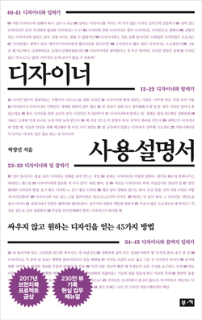

p14
"이 시간의 작업 과정은 어떻게 되나요? 기획부터 제출까지 간략하게 프로세스를 알려 주세요."
어떤 과정을 거쳐서 시안이 완성되었고 해당 시안을 진행하면서 어떤 갈등이 있었는지 어떻게 갈등을 해결해는지를 구체적으로 물어보는 것이 훨씬 좋다.
p23
디자이너는 기본적으로 타인의 욕구를 토대로 작업하는 사람이다. 여기서 중요한 단어는 '토대로'이다. 남이 하라는 대로 하는 것이 아니라, 그것을 토대로 작업한다는 점이 중요하다.
클라이언트의 욕구가 디자이너가 추구하는 의미와 방식과 다르다면 둘 중 선택할 수 있다. 끝까지 설득하던가, 타협하든가. 둘 다 잘못된 것은 아니다. 정체성은 인식하는 것이지 반드시 지켜야 할 의무나 족쇄가 아니니까.
p24
상대방의 생각을 정리하고 그 욕망을 읽어 내는 것부터가 디자인이다. 누구도 자신의 생각을 명쾌하게 정리하거나 시각화해서 전달해 주지 않는다.
클라이언트는 여백이 몇 밀리미터이고 몇 픽셀이 어긋났는지는 사실 관심이 없다.
클라이언트의 욕망이 반영된 유의미한 디자인이 탄생했는지가 중요하다.
어디에 얼마나 여백을 주고, 색을 어느 정도로 맞출 것이며, 정렬은 어떤 식으로 구성할지에 대한 모든 선택권은 디자이너에게 있다. 그리고 그 행위에는 정당한 이유가 있어야 하고 디자이너는 그것을 설명할 수 있어야 한다.
p29
<취향의 탄생>의 저자인 톰 밴더빌트는 '취향은 개인의 선택'이라고 언급했다.
p45
시간은 주지 않고 빨리만 하라고 한다. 열정이 없어서 그렇다, 실력이 안 된다, 회사가 학교냐(물론 학교는 아니지만, 마법을 부리라고 하면 안 되지) 등등의 근거로 부당한 지시를 강요하는 경우이다.
일하다 실수했고 문제가 발생했으면 실질적인 책임을 물으면 된다. 그게 절차상의 시말서든 경위서든 감봉이든 뭐든 시스템에 따라 하면 된다. 하지만 회사 지침 어디에도 인격을 무시하고 갈궈도 된다는 규정은 없다.
현대카드 정태영 CEO 또한 <중앙일보> 인터뷰에서 "직원은 사장의 현란한 철학보다, 사무 공간, 식당, 화장실, 처우 등을 통해 회사와 사장을 평가한다"고 언급했다. 디테일은 고객에게나 직원에게나 중요한 요소이다.
p58
디자이너는 말로 대화하는 사람이 아니다. 레퍼런스든 사진이든 시안이든 일단 시각적 결과물을 두고 논쟁하고 고민한다. 말로 회의하는 기획 미팅에서도 회의 내용을 그림으로 바꿔 생각하는 것이 디자이너이다. 실제 완성된 모습을 상상해내고 그 결과를 예측하는 방식이다.
p64
디자인의 목적은 심미성 이외에도 실제로 경험, 행동을 만드는 데에 있다는 것을 생각한다면 수많은 직원이 수많은 행동을 하며 살아가는 사무실 내부의 디자인은 결코 간과할 수 없는 영역이다. 우리가 '그것도 디자인이었어?' 라고 모른 채 지나가지 않는다면 말이다.
p66
웹 기반의 회사라면 UX에 정말 혼신의 힘을 기울이는 것이 옳다.
p70
폴 스미스는 "제대로 적용된 디자인은 우리 삶의 질을 높이고, 직업을 만들어 내며, 사람들을 행복하게 만든다"라고 디자인을 규정했고, 다이슨 엔지니어링 총괄, 마크 A.스미스는 "우리의 디자인 철학은 '문제를 해결한다'는 것이다" 라고 했다.
르 코르뷔지에는 "디자인은 눈에 보이는 지성이다"라며 철학적으로 접근하기도 했다.
p75
교육 프로그램, 행사, 브랜딩 등등 기획에는 반드시 그 전체 기획안을 관통하는 컨셉과 기획 의도가 있기 마련이다. 만약 이게 없다면 기획자를 의금부로 보내자.
p82
스티브 잡스는 아이맥의 등장 이후 어떻게 고객의 니즈를 파악할 수 있었냐는 질문에 "사람들은 자신이 원하는 것을 보여 주기 전까지는 알지 못한다"라고 답변했다. 사람들은 자신이 생각하는 것이 명확하다고 믿지만 그것은 착각일 뿐이다.
듬성듬성 비어 있는 빈칸과 애매하게 헷갈리는 숫자들을 정리해서 마방진을 완성해 나가는 것이 디자이너의 첫 숙제이다.
p84
이렇게 하나하나 퍼즐을 맞춰 나가자. 사람은 없던 이미지를 창조해 내기보다는 기존 정보를 조합하고 섞어서 자기 생각으로 재창조하기 마련이다.
p150
디자인의 역할과 목표는 다양하지만 디자인 업무의 핵심은 상대의 욕망을 가시화하는 것이다.
p153
우선 디자이너는 자신이 원하는 디자인을 만드는 사람이 아니다. 그리고 정량적인 비교 수치가 나오기 전까지는 기능상의 옳고 그름을 얘기하기는 힘들다. 또한 미하적인 이론이 현실 세계에서 항상 들어맞는 것은 아님을 우리는 익히 알고 있다.
p196
이는 선배 디자이너의 조언에도 통용된다. 선배 디자이너는 이론과 더불어 경험까지 탑재했으니 거의 만렙에 살아 있는 성전, 디자인 위키피디아처럼 느껴지겠지만 오히려 그 경험이 독이 되는 경우가 종종 있다. 경험은 레퍼런스로 쓰여야 한다. 경험을 정답처럼 인식하는 순간 순도 100퍼센트의 꼰대로 진화할 수 있다.
p198
피드백의 목적은 자기 자랑이 아니다, '결과물을 더 잘 만들기 위함'이다. PPT를 만드는 직우너 뒤에서 한마디를 툭 던지며 '헤헤헤 나도 한마디 했당!~'이라며 뿌듯해하는 사람들이 줄어들었으면 하는 바람이다.
p210
디자이너가 보기에 좋고 이론에 들어맞는 디자인을 만드는 게 아니라, 상대의 의도와 생각을 시각화하는 것이 먼저다.
p220
디자인권은 디자인의 상업적 권리에 대한 것인데 내가 만든 디자인 문구나 상품을 직접 팔고 싶다면 특허출원 전 비공개를 원칙으로 하고, 특허출원을 하는 것이 먼저다. 이미 공개되었다면 공개후 6개월 이내에 디자인권을 획득해야 한다. 이를 놓치면 공공의 이익을 위해 디자인 천사 노릇을 했다고 여겨 디자인권에 대한 효력을 상실한다(저작권은 유효하다). 그러면 타인이 유사한 디자인으로 다이어리를 만들어 팔아도 할 수 없다.